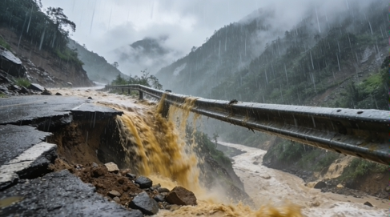

广大市民、各位游客朋友们：
当前已进入2008年主汛期，我市即将迎来持续强降雨天气。受集中降雨影响，全市山区、河谷、临崖地带极易发生山体滑坡、泥石流、山洪暴发、河水暴涨湍急等地质灾害和险情，对人民群众生命财产安全、出行安全构成严重威胁。
为切实保障大家安全，现郑重提醒：
- 请广大市民密切关注气象及地质灾害预警信息，尽量减少前往山区、沟谷、河道、临崖等危险区域；遇暴雨天气尽量居家避险，不要在河边、山边逗留、劳作或游玩。
- 请外来游客合理安排行程，雨季期间暂停进入临天崖景区及周边深山、峡谷、溪流区域，切勿冒险涉水过河、靠近湍急河流、攀爬悬崖陡坡。
- 山区道路弯多、路滑、易塌方，驾车出行请减速慢行，遇积水、滑坡、落石路段切勿强行通过。
- 如遇险情，请保持冷静，迅速向高处、安全区域转移，并及时拨打求助电话。
请大家提高警惕、加强防范，珍爱生命、安全第一，共同守护平安湘水。
